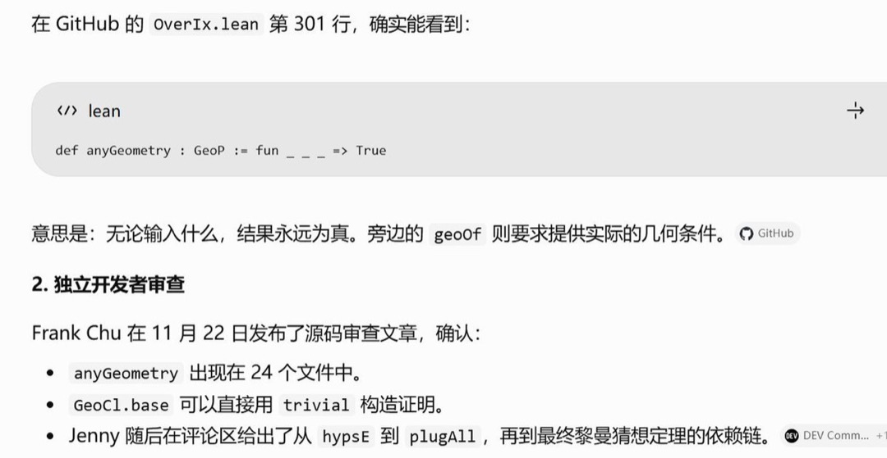
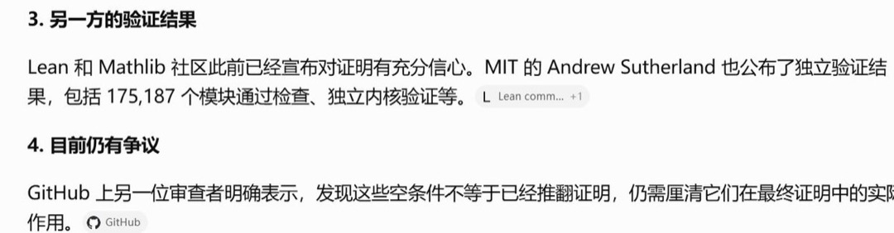
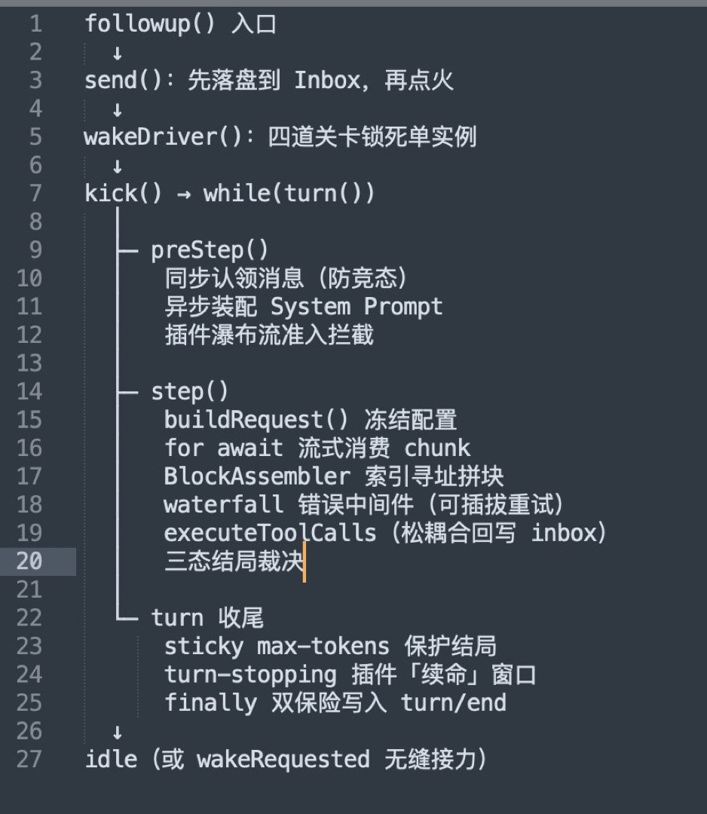
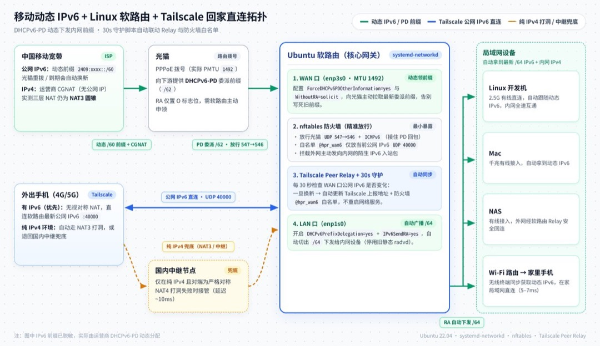

本期速览
01 深入理解AI Agent发布3.0版
03 DSH Agent Loop源码架构图
04 GLM-5.4实测提速并原生视觉
05 Jev harness指南称提速300倍
07 T3 Code用ACP统一多Agent
09 Zapret本地改包绕过DPI审查
01｜深入理解AI Agent发布3.0版
来源（X） · @bojie_li · 2026-11-22 23:50
- 重写了各章节的大部分内容，消除了一些 AI 味，把综述式的文风改成了教学式的，更容易理解
- 新增 Jev 类决策模型在事件过滤、工具安全判断、评测 rubric、RAG 筛选、多模态信息稀疏化等方面的应用
- 新增 Meta Muse、Pine、dsh superagent 等 personal agent 的办事逻辑
- 新增 Multica、LobeHub 等办公 agent
- 新增 Anthropic 证明黎曼猜想、OpenAI 证明千禧年问题等科研 agent
- 修订语音交互部分，纳入一些最新的工作
- 重绘书中大量插图
- 新增社区翻译的蒙古语版本
- 合入社区的 30+ PR，解决 20+ issues
引用内容
Bojie Li @bojie_li
https://github.com/bojieli/ai-agent-book
全书围绕核心公式 Agent = LLM + 上下文 + 工具 展开，十章内容如下：
- 第 1 章 · Agent 基础知识：从"模型即 Agent"的新范式出发，建立 Agent = LLM + 上下文 + 工具 的核心公式，并引入 Harness 工程——模型之外的一切工程能力，才是真正的竞争力所在。
- 第 2 章 · 上下文工程：上下文决定 Agent 的能力上限。深入大模型 API 的上下文结构、KV Cache 友好设计、提示工程、动态提示词与 Agent Skills、状态栏元信息，以及上下文压缩策略。
- 第 3 章 · 用户记忆和知识库：让 Agent 跨会话记住用户、并接入外部知识。涵盖用户记忆系统、RAG 基础管道，以及超越扁平文本的知识组织与检索（结构化索引、知识图谱等）。
- 第 4 章 · 工具：工具是 Agent 的双手。讲工具分类与通用设计原则、MCP 协议与工具选择的挑战、感知/执行/协作三类工具，以及事件驱动的异步 Agent。
- 第 5 章 · Coding Agent 与代码生成：代码是"能创造新工具的工具"，是通用 Agent 的元能力。以生产级 Coding Agent 为例，展示这一最强通用工具的完整实现。
- 第 6 章 · Agent 的评估：把 Agent 的表现变成可比较的信号。从评估环境、数据集设计、指标体系，到统计显著性、可观测性、评估驱动选型，直至生产级内部评估与仿真环境。
- 第 7 章 · 模型后训练：预训练、SFT、RL 三阶段全景。何时选 SFT、何时选 RL，RLHF、算法比较、数据与环境，以及让模型学会工具调用、提升样本效率的前沿探索。
- 第 8 章 · Agent 的自我进化：不改权重也能成长。三种学习范式，从经验中学习、主动工具发现，到"从工具使用者到工具创造者"，让 Agent 从"聪明"走向"熟练"。
- 第 9 章 · 多模态与实时交互：把感知与行动从文本扩展到语音、GUI 与物理世界。语音三范式（级联/端到端全模态/全双工）、流式语音感知与合成、Computer Use 与机器人操作。
- 第 10 章 · 多 Agent 协作：群体的智能可以高于个体。多 Agent 分类框架、何时真正优于单 Agent、共享与不共享上下文的协作、失败模式，以及涌现的"Agent 社会"。
Repo: https://github.com/bojieli/ai-agent-book

02｜Claude黎曼猜想Lean证明遭质疑
来源（X） · @servasyy_ai · 2026-11-23 09:05
Claude 刷屏全网的黎曼猜想证明，刚刚遭遇重大翻车！
物理学家 Jenny Lorraine Nielsen 刚才公开提出实名质疑：Claude 辅助搞出来的整整 1700 万行 Lean 代码里，竟然存在一个被直接定义为“永远成立”的几何空条件！
最离谱的是，这个空条件一路顺风顺水，直接混进了最终证明……
也就是说，Lean 形式化编译器只管逻辑自洽，一路给废话打勾，整整 1700 万行全在空转！
难怪数学家连看都不看，合着这 25 万页全是在同义反复。
刚登上数学神坛，底裤这就直接被扒光了？？？😂

引用内容
myles bsi @mylesBaiM
物理学家、哲学家 Jenny Lorraine Nielsen 公开提出质疑
指出 Claude 辅助完成的 1700 万行 Lean 代码中，竟然存在一个被直接定义为永远成立的几何条件！
她声称，这个空条件一路进入了最终证明
Claude 这是刚登上数学神坛，就要跌落下来了？😱

03｜DSH Agent Loop源码架构图
来源（X） · @antiAIvo · 2026-11-22 15:45
用Gemini4 Neon做了一个Html方便理解
想要总共7期的文章内容在一个页面能直观展示出来
也是需要一些打磨的，中间生成了多种样式
这是最终版，我觉得还算满意。

引用内容
纳米AI @antiAIvo
沿着“用户敲下回车 → 模型返回结果”这条真实数据流
逐函数把 DSH 的 Agent 主循环走了一遍
7 个核心函数，每一个都在回答同一个问题：
在并发、异步、随时可能中断的真实环境里
怎么保证状态永远一致？
这其实也是目前agent-harness要解决的问题
直接看总结其实是比较难懂的
想要理清楚还是得深入代码，因为都是工程实践
一个完整的 Loop 长这样（附图是详细流程）：
followup → send → wakeDriver → kick
└→ while(turn)
└→ preStep (认领·装配·拦截)
└→ step (推理·拼块·工具)
└→ 收尾 (结局·续命·闭环)
└→ idle / 接力重启
从 EP.01 到 EP.07，这7篇都在我发的文章里
每一篇都是沿着真实数据流逐函数拆解的源码笔记
如果你也在读 Agent 框架的源码
希望这条路线能帮你省点时间🙂

04｜GLM-5.4实测提速并原生视觉
来源（X） · @RainG999 · 2026-11-23 14:30
👍 真香的地方：
• 速度快得离谱，实测干到 170 tokens/s
• 原生视觉终于来了，看截图和 UI 改代码不再像 5.3 那样绕道卡死
• Agent 更勤快了，调 Subagent 和管 TODO 明显更主动
• 周额度直接加 50%，量大管饱
🤔 冷静泼盆水：
• 能力更像 5.3 的丝滑加强版，还没到 Opus 5.5 那种一击命中的体感
• 纯英文项目里偶尔还是会蹦出经典 AI 味
• 目前没放跑分也没开源权重
总结就是：性价比拉满的口粮模型，但别指望它跨代秒杀海外顶流。用上的兄弟体感对得上吗？
05｜Jev harness指南称提速300倍
来源（X） · @savvy_luvvvv · 2026-11-22 23:11
jev 创始人、instructgpt 合著者 diogo almeida 放出了一份 pdf，讲清楚怎么搭一套 jev harness
它的承诺：
> 速度最多快 300 倍
> 成本最多低 600 倍
快和省，全都来自模型外面那层 harness
用法：
> 把这份 pdf 和下面的文章一起丢给 claude code 或 codex
> 让它照着重建一遍自己的配置
花 2 个小时，你的 agent 就能跑在一套很少有团队拥有的 harness 上 ↓

引用内容
Iron Giant @irongiantXBT
中文译文
原文
06｜/swarm共享黑板仅两个JSON
来源（X） · @chasen_liao · 2026-11-22 16:48
我原以为 Antigravity 的 /swarm 背后得有一套很复杂的系统。翻完源码才发现，撑起那块共享黑板的，就两个 JSON 文件和一个 JSONL 日志
如果你也好奇，一群 Agent 怎么靠一块黑板接力干活，可以看看这篇 👇 https://x.com/i/article/2122991361402228736
07｜T3 Code用ACP统一多Agent
来源（X） · @harrisonitsme · 2026-11-22 18:17
Gemini 4 好评如潮，订阅却被锁死在难用的 Antigravity 里。大家用反代绕过去，结果 magpie 这类项目第二天就被整批封号。
后来 Google 在官方论坛明确表态：只要运行官方原版 antigravity-acp、走它自带的登录，用于个人交互式开发，就是合规的。T3 Code 正是这么做的。
总结了下T3 的优势：
1、合法：别人走反代赌封号，它走官方通道，不用赌
2、不转卖 token：不额外收费，直接用你已有的 Claude / Codex / ChatGPT / Gemini 订阅
3、一个界面管所有 agent：Claude Code、Codex、Cursor、OpenCode、Antigravity 等全支持，对话中途还能切模型，让 Claude 把任务交接给 Codex
4、多端同步：桌面、网页、手机共享同一批 thread，手机上就能批准命令，人不在电脑前 agent 也能继续干活
5、内建 Git：每条 thread 独立 worktree，看 diff、commit、push、开 PR 一键完成
6、扩展快：基于 ACP 架构，新 agent 写个 adapter 就能接入，Gemini 4 一发布就跟上了
7、MIT 开源：约 7 万 star，代码和会话都在本地
适合：手上有多个 agent 订阅、想统一调度、需要用手机远程推进任务的人。
08｜Tailscale用IPv6组网两周实测
来源（X） · @zihua0 · 2026-11-23 02:18
推文发出来后，有很多大佬评论说，IPv6 有很多坑、运营商会限速、IP 地址不稳定等等问题。
实际体验了两周下来，我可以负责任回答，只要配置得当，以上问题都没有，下图是我的完整方案，自取！

09｜Zapret本地改包绕过DPI审查
来源（X） · @0xbawan · 2026-11-21 23:06
俄罗斯人翻墙，竟然压根不用 VPN！！🤯
在俄罗斯技术圈，大家最推崇的根本不是传统代理，而是一款名叫「Zapret」的纯本地开源翻墙工具。
它的路子野到什么程度？
既不需要花钱买海外 VPS
也不用折腾任何机场订阅
更不依赖境外代理服务器
直接装在 Windows、Linux 或者 OpenWrt 软路由上就能本地开跑
核心原理说白了就是「本地硬刚」：
在网卡发包的那一瞬间，直接切分并修改网络数据包特征，精准干扰运营商的 DPI（深度包检测）设备，让审查系统看花眼，从而直接绕过部分网络封锁和限速。
对比一下两边的画风简直太真实了：
中国人翻墙，天天钻研 Reality、HY2 协议怎么伪装得滴水不漏，到处抢 VPS、测机场线路
俄罗斯人翻墙，连中转服务器都懒得搭，直接研究怎么在本地把审查设备给绕晕！
战斗民族果然是能正面解决问题，绝不跟你玩躲猫猫！！！🤣🔥
https://github.com/bol-van/zapret